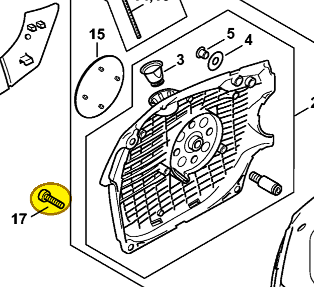
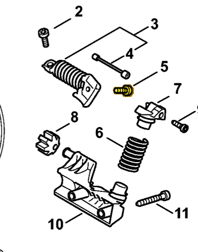
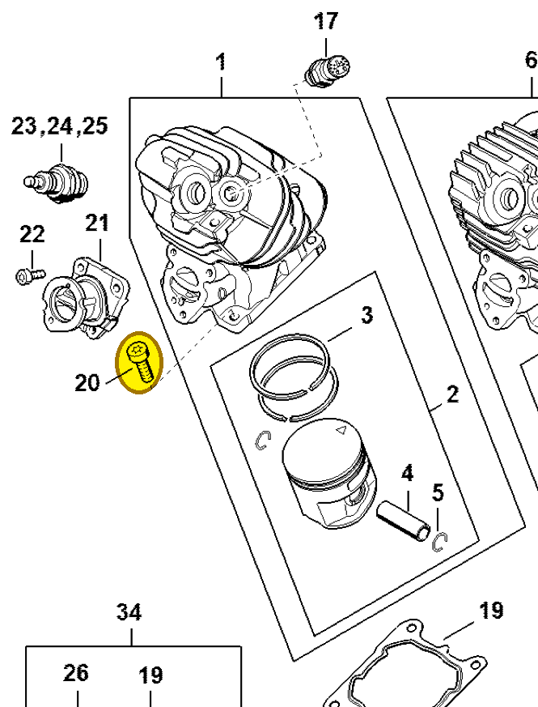

Pan head screw IS M5x20
9022 371 1020
MS 462 — starter housing
IS M5×20. Secures fan housing 1142 080 2102 to the crankcase.
Item 17 Qty listed: 3

MS 462 C-M Z spare-parts list, 10/29/2024. Drawing p. 21; parts table p. 22.
MS 462 — AV system
IS M5×20. Fastening in the anti-vibration assembly.
Item 5 Qty listed: 1

MS 462 C-M Z spare-parts list, 10/29/2024. Drawing p. 32; parts table p. 33.
MS 261 — cylinder
IS M5×20. Cylinder-to-crankcase fastening.
Item 20 Qty listed: 4

MS 261 C-M spare-parts list, 10/02/2023. Drawing p. 8; parts table p. 9.
Suggest a correctionGitHub · sign-in required